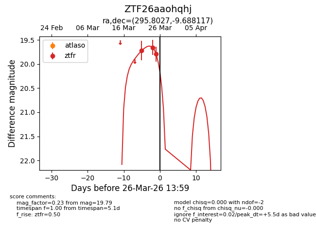
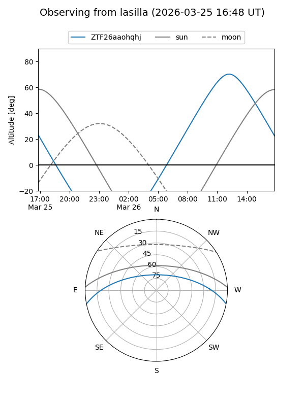
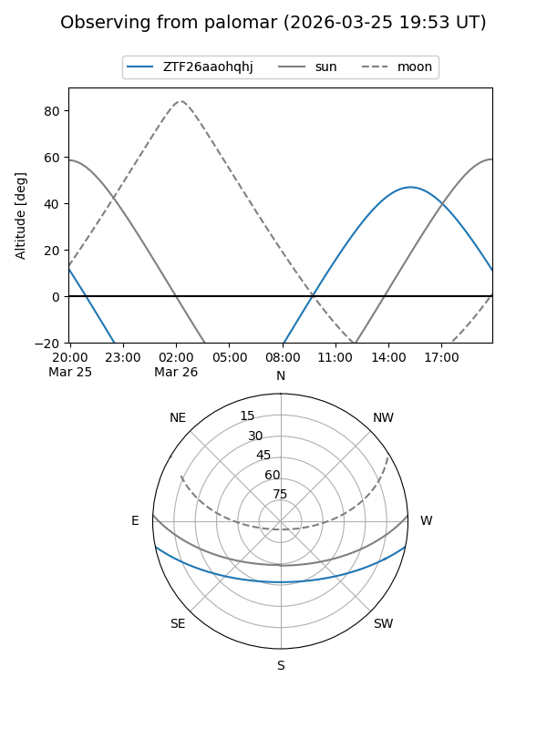
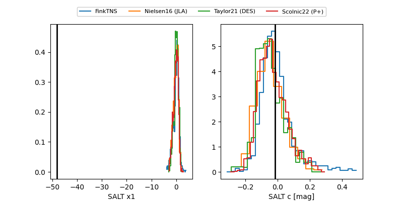

ZTF26aaohqhj
Target ZTF26aaohqhj at 2026-03-26 14:01
Aliases and brokers:
FINK: link
Lasair: link
ALeRCE: link
alt names
ZTF26aaohqhj (ztf,fink_ztf)
Coordinates:
equatorial (ra, dec) = 295.8027,-9.68812
equatorial (HMS+DMS) = 19:43:12.64,-09:41:17.22
galactic (l, b) = (30.0065,-15.85692)
Flags:
Photometry:
last ztfr=19.79
3 ztfr detections
Lightcurve

Visibility


Additional plots
